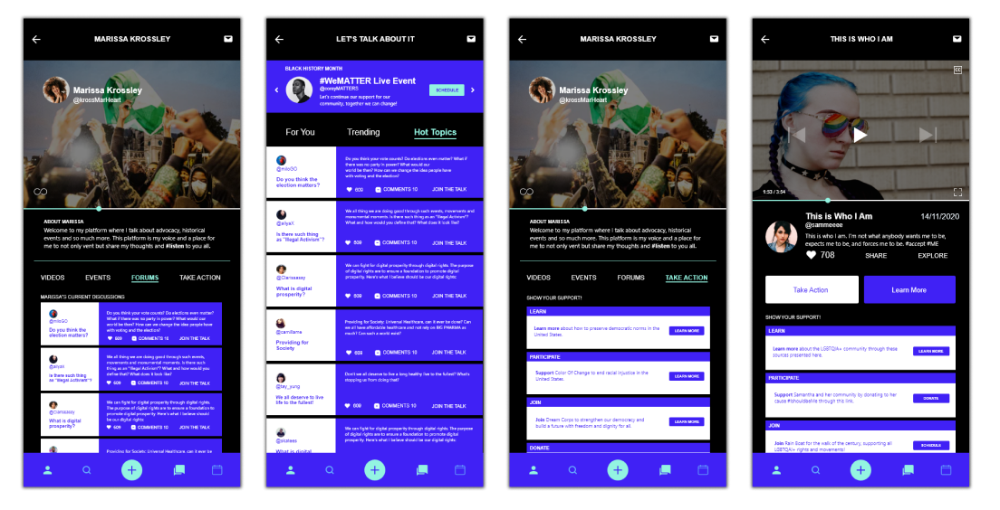

MUSE
We are in this together to change our world for the better
Hackathon | Adobe Creative Jams - MTV
Position | UX Researcher / UI Designer
Duration | 3 Days
Tools | Adobe XD, Illustrator
Background
Adobe Creative Jams is an event where teams from all over the world compete in a tournament that puts our creative skills to the test using Adobe Creative Cloud apps.
Problem
Design a mobile app that empowers an individual to encourage advocacy among their network by sharing. Tie the sharing to a cultural event or historic movement important to them and give them tools encouraging donations, volunteerism, and action.
Outcome
MUSE. A mobile app where individuals can shine a light onto the world’s pressing issues, through posting videos, organizing peaceful protests and workshops for anyone to join and stand in solidarity.

User Research
My teammate Jacquelyn and I began our research with identifying our target market. As guided by the Adobe Creative Jams problem brief, we are to practice empathy by targeting a persona/audience outside of our own such as underrepresented communities or those who do not have the appropriate platform to voice their concerns!
User Interviews
To begin the process in creating the solution, we determined key users and aspects to implement in the mobile app as guided by the following problem statements.
Personas
Meet Kaylees, our main persona for the purpose of this design challenge.
Problem Analysis
In addition to designing a solution for the problem brief we want to include additional elements that enhance the core purpose: collaboration, timed events, messaging, playlist discovery, real-time discussion groups, social media sharing, group t imelines, challenges, etc.
Design Process
Visual Identity
The colours, font and style of the mobile app should be empowering, just by looking at the app (along with captivating copy-writing), individuals should also feel empowered when using the app.
Wireframes
As the UX/UI designer I first began designing low-fidelity wireframes prior to finalizing the high-fidelity prototypes
Feedback + Iterations + Testing
Using the feedback received from minor user-testing and from my teammate, I thought about how we can encourage users to “take action” in any way or form they are able to.
Take Action
Oftentimes individuals are unaware of resources they can visit and support, in addition - some resources may not be credible. Providing a “take action” section below each event to learn, participate or join can really encourage individuals to stand up for what they believe in.

The Solution
After receiving feedback and iterating my wireframes, I moved on to creating the high fidelity designs and revisited my problem statements and guiding questions.
Interact with It!
Play around with the prototype however you want. Experience and explore MUSE the app together you can change our world for the better
Reflection
In order for us to stand in solidarity, we must educate ourselves first. During the design process of this mobile application, I reflected on my challenges when learning about a global issue or movement that I’m not familiar with. I thought about how I was struggling on where to start, what resources are reputable and which are not, and how I can ensure my support was actually counted for. I wanted to make this mobile app to be as simple as possible for users to navigate when learning about the world’s pressing issues, all the while making it easy for individuals to create a positive change.